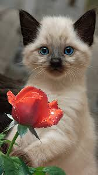
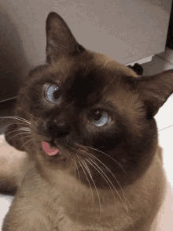

 
O gato siamês é uma das raças mais antigas e reconhecíveis de gatos, originária da Tailândia (antiga Sião), e é famosa por sua aparência elegante e personalidade marcante.
Essa raça é conhecida por seu corpo esguio, musculoso e de porte médio, com uma pelagem curta e característica, que geralmente é mais clara no corpo e mais escura nas extremidades (orelhas, patas, cauda e face).
Essa coloração é chamada de "ponto" e resulta de uma mutação genética que afeta a produção de pigmento, deixando as extremidades mais escuras.
Além da aparência, os gatos siameses são famosos por sua personalidade sociável, extrovertida e carinhosa.
Eles tendem a ser bastante vocais, com um miado característico que é bastante comunicativo, e gostam de interagir com seus donos, sendo muito afetuosos e exigentes de atenção.
São também gatos inteligentes e curiosos, muitas vezes demonstrando habilidades para aprender truques e comandos.
Algumas de suas caracteristicas são:
Pelagem curta e fina – Macia, brilhante e rente ao corpo.
Padrão de coloração "colorpoint" – Corpo claro com extremidades (orelhas, focinho, patas e cauda) mais escuras.
Olhos azuis intensos – Um dos traços mais marcantes da raça
Corpo esguio e elegante – Comprido, ágil e musculoso.
Orelhas grandes e pontudas – Bem abertas e proporcionais ao rosto.